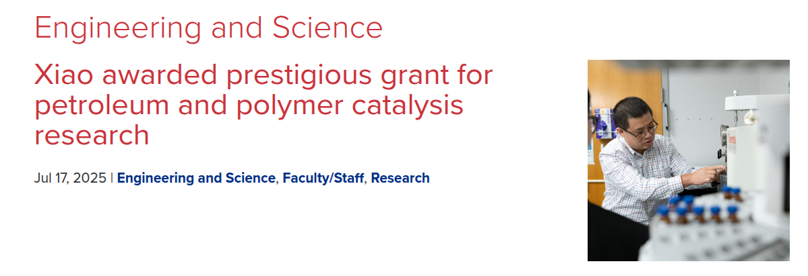
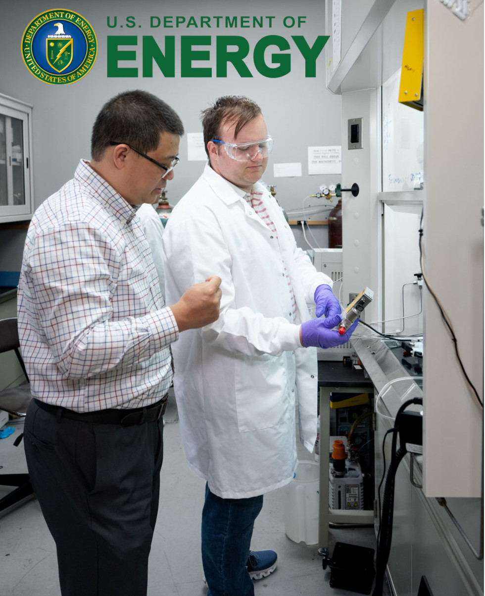
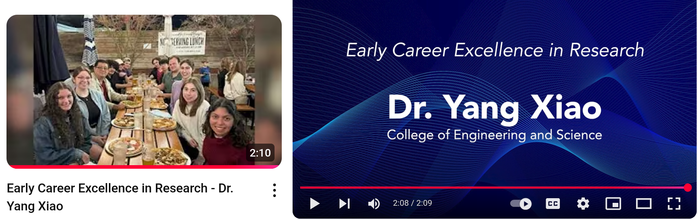
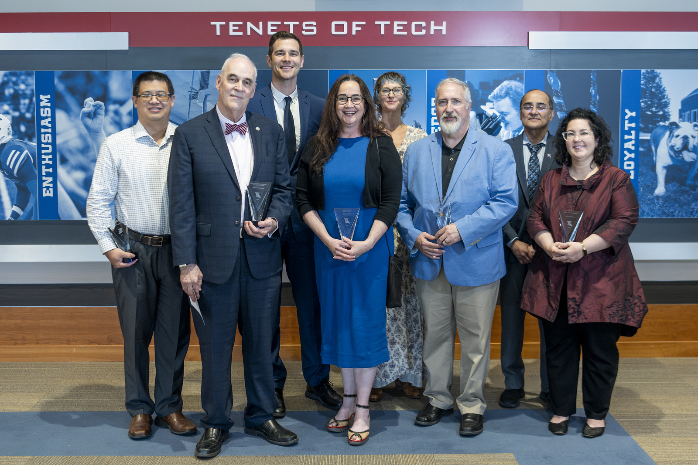
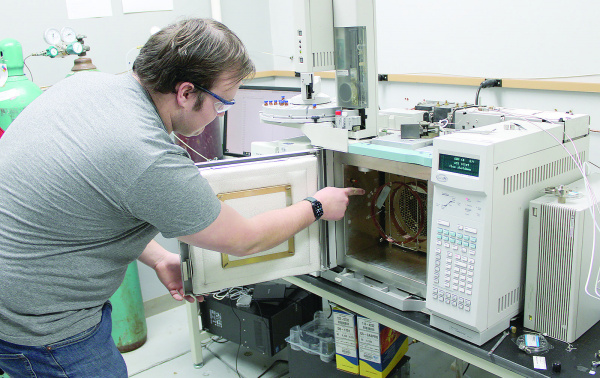
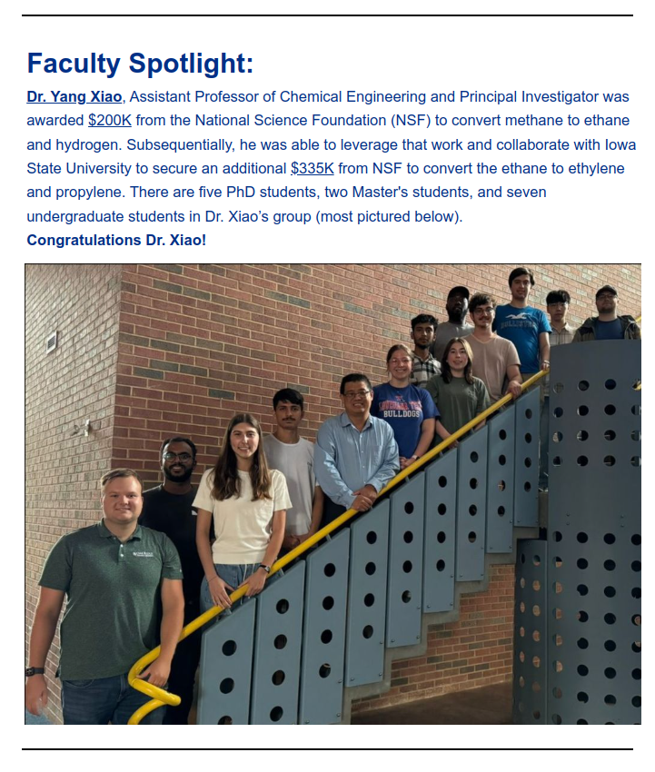
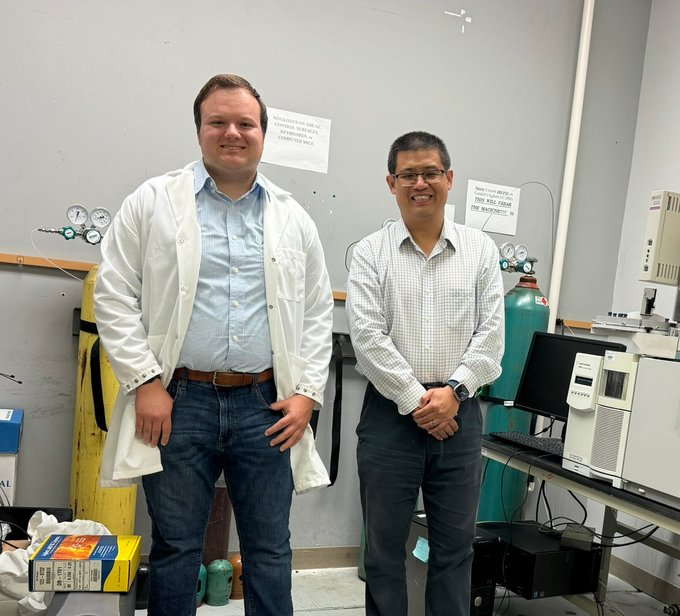

In September 2025, Louisiana Tech University reported our DARPA project!
See Report
Here.

In July 2025, Louisiana Tech University reported our ACS-PRF Doctoral New Investigator award!
See Report
Here.

In May 2025, Our COES (College of Engineering and Science) reported that Tobias Misicko, a third-year Ph.D. candidate, on receiving the U.S. Department of Energy’s (DOE) Office of Science Graduate Student Research (SCGSR) Fellowship!
See Report
Here and Here.

In May 2025, Louisiana Tech University released a YouTube video highlighting Dr. Yang Xiao and his research group. The video showcases their work in chemical reaction engineering and catalysis science, emphasizing their contributions to sustainable energy solutions. See Link.

In April 2025, Dr. Xiao's award of the 2025 Louisiana Tech University Early Career Excellence in Research is covered by Ruston Daily Leader. See Link1 and Link2.

In March 2025, Toby's research is covered by Ruston Daily Leader. See Link.

In December 2024, Our College of Engineering and Sciences Faculty Spotlight highlights Dr. Xiao and our research group. See Link.

In June 2024, our NSF ERI award is covered by Lincoln Parish Journal. See Link.